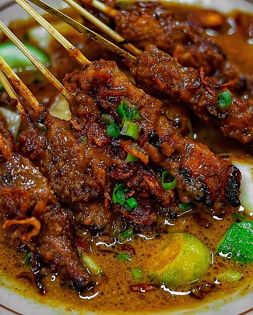

Home
Sate Ayam Madura

Sate Ayam Madura is one of Indonesia's most beloved street foods, originating from the island of Madura, East Java. It's simple, incredibly flavorful, and all about the perfect peanut sauce. The star of the dish is tender grilled chicken, served with a rich and slightly sweet peanut sauce that's absolutely irresistible. Curious how to make this iconic dish at home? Here's the recipe:
Ingredients
For the sate:
- 500 grams chicken breast
- Sweet soy sauce (kecap manis), to taste
For the peanut sauce:
- 5 shallots
- 5 cloves garlic
- 5 red curly chilies
- 11 bird's eye chilies (adjust to your spice preference)
- 250 grams peanuts
- 500 ml water
- 1 tsp salt
- 50 grams palm sugar (gula merah), grated
Optional toppings:
- Sliced raw shallots
- Sliced bird's eye chilies
- Lime wedges
- Lontong (rice cakes)
Steps
Make the peanut sauce:
- Roughly chop the shallots, garlic, bird's eye chilies, and red curly chilies. Set aside.
- Fry the peanuts in a pan until golden brown. Don't let them burn, just until fragrant and slightly darkened.
- Add the chopped shallots, garlic, and chilies to the same pan with the peanuts. Fry briefly until the vegetables soften and turn fragrant. Then turn off the heat.
- Transfer everything into a blender. Add enough water to reach about halfway up the mixture. Blend until smooth.
- Pour the blended mixture back into a pan. Add 500 ml water, salt, and palm sugar. Cook over medium heat, stirring occasionally, until the sauce thickens and is fully cooked. Set aside.
Prepare the sate:
- Cut the chicken breast into small, bite-sized cubes.
- Thread the chicken pieces onto bamboo skewers.
- Drizzle with sweet soy sauce (kecap manis) and rub it all over the chicken until evenly coated.
- Grill the skewers on a grill pan, charcoal grill, or whatever you have at home. Turn occasionally so they cook evenly and get those beautiful charred bits.
How to serve
- Spoon some peanut sauce onto a plate. Add a drizzle of sweet soy sauce and mix well.
- Place the grilled satay on top, then flip them around so the sauce coats every piece.
- Sprinkle with sliced raw or fried shallots (bawang goreng) and fresh bird's eye chilies if you like it spicy. (Optional)
- Squeeze a little lime juice over everything for that extra fresh kick. (Optional)
- Personal recommendation: Eat with warm rice or lontong (rice cakes), and don't forget to sprinkle lots of fried shallots on top.